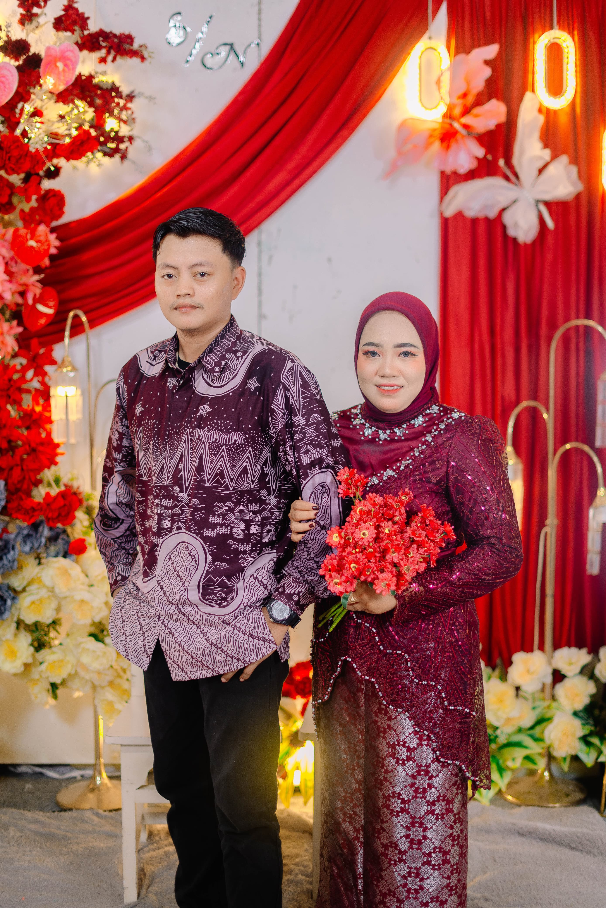
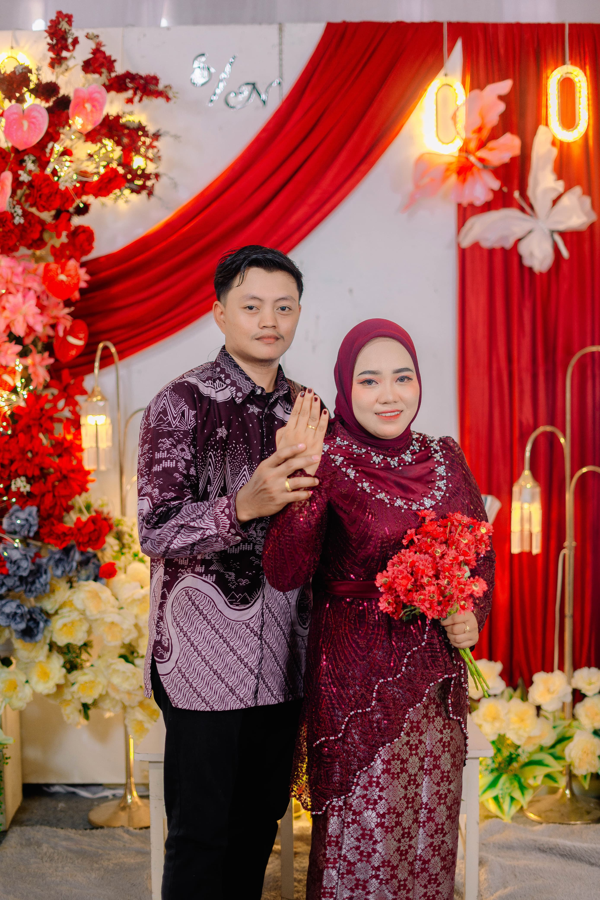

Kepada Yth:
Tamu Undangan di Tempat
Kami akan menikah, kami ingin Anda menjadi bagian dari hari bahagia kami
09 November 2025
وَمِنْ آيَاتِهِ أَنْ خَلَقَ لَكُم مِّنْ أَنفُسِكُمْ أَزْوَاجًا لِّتَسْكُنُوا إِلَيْهَا وَجَعَلَ بَيْنَكُم مَّوَدَّةً وَرَحْمَةً ۚ إِنَّ فِي ذَٰلِكَ لَآيَاتٍ لِّقَوْمٍ يَتَفَكَّرُونَ
"Dan di antara tanda-tanda (kebesaran)-Nya ialah Dia menciptakan untukmu pasangan-pasangan dari jenismu sendiri, agar kamu merasa tenteram kepadanya, dan Dia menjadikan di antaramu rasa kasih dan sayang. Sesungguhnya pada yang demikian itu benar-benar terdapat tanda-tanda bagi kaum yang berpikir."
Dengan memohon rahmat dan ridho Allah SWT, insyaAllah kami akan menyelenggarakan acara pernikahan anak kami:
Putri pertama dari Bapak Rozali & Ibu Supiah
Putra pertama dari Bapak Suarno & Ibu Tumiyem
Dengan segala kerendahan hati kami berharap kehadiran Bapak/Ibu/Saudara/i dalam acara pernikahan anak kami yang akan diselenggarakan pada:
Akad & Resepsi Nikah
Minggu, 09 November 2025
Pukul : 08.00 WIB - selesai
Bertempat di Pematang panjang dusun 4
Atas kehadiran dan doa restunya kami ucapkan terima kasih
Wassalamu’alaikum Wr. Wb.